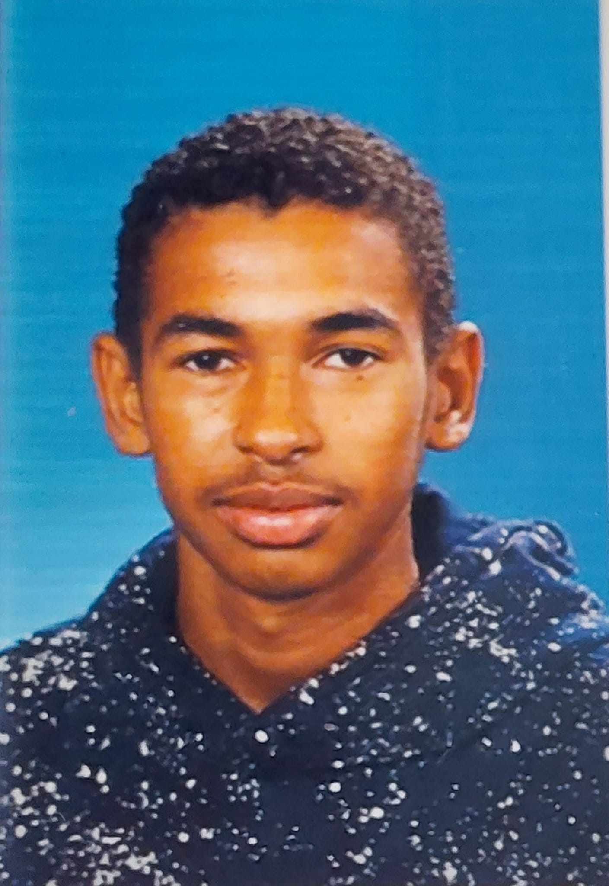

Elmarich Isenia
Designer
Ik ben Elmarich Isenia, ik heb gewerkt aan het ontwerp van de FoodAlarm website en logo's.
E.G.A.Isenia@student.hhs.nl
Graige Dorothea
Backend Developer
Ik ben Graige Dorothea, Backend developer van FoodAlarm. Ik heb gewerkt aan het maken van de database en alle server side programma's.
G.F.Dorothea@student.hhs.nlYamairo Martinus
Frontend Developer
Ik ben Yamairo Martinus, ik heb gewerkt aan de website, en de webapp en de functionaliteit die hierbij hoort.
Y.D.C.Martinus@student.hhs.nl

Matis Keita
Video Director
Hallo ik ben Matis Keita, eerstejaars HBO-ICT student aan de Haagse Hogeschool
M.Keita-1@student.hhs.nl